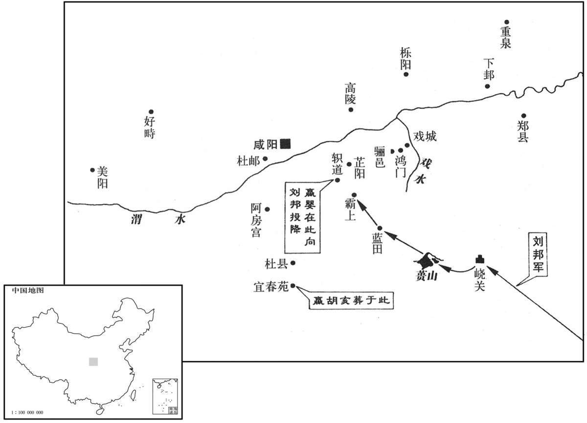

公元前207年资治通鉴：本年记事、原文与白话对照
按原书编年位置阅读；追叙和史论不等于本年发生的事件。白话采用所据译本，缺译不以生成译文补齐。
卷8 · 本年记事
公元前207年 · 二世皇帝在位第3年
三年〔（甲午、前二○七）〕
本年事件索引（现代整理）
- 田都离田荣，随楚救赵
- 刘邦在成武击破东郡尉
- 宋义屯安阳，主张坐待秦疲
- 项羽斥宋义不恤士卒、徇私误国
- 项羽杀宋义，掌楚兵救赵
- 刘邦收并刚武侯军，合魏军破秦
- 齐王建之孙田安随项羽救赵
- 巨鹿危急，陈余不敢进救
- 巨鹿之战，项羽破釜沉舟败秦
- 张耳陈余争救赵之责，交恶分兵
- 彭越归刘邦，助攻昌邑
- 郦食其托骑士求见刘邦
- 郦食其说取陈留，刘邦纳策
- 刘邦败杨熊，二世诛杨熊
- 刘邦略颍川韩地，战洛阳失利
- 张良陈恢献策，刘邦招降宛城
- 刘邦西进约束掠夺，秦民喜悦
- 司马欣见赵高不成，劝章邯自保
- 陈余致书，劝章邯反秦合纵
- 项羽再破秦军，章邯投降
- 申阳定河南，归附项羽
- 赵高指鹿为马，试探群臣
- 刘邦攻克武关，赵高惧而称病
- 赵高杀二世，立子婴为秦王
- 子婴称病诱赵高，诛其三族
- 刘邦用张良计，蓝田大败秦军

本年形势与背景参考图
冬，十月，齐将田都畔田荣，助楚救赵。〔为项羽封田都张本。〕
冬季，十月，齐将田都背叛相国田荣的指令，领兵协助楚援救赵。
沛公攻破东郡尉于成武。〔秦灭卫，置东郡。尉，郡尉也。班志，成武即卫楚丘地。括地志：今曹州县。〕
刘邦在成武打败了东郡郡尉。
宋义行至安阳，〔师古曰：今相州安阳县。索隐曰：傅宽传云“从攻安阳、杠里”，则当俱在河南；师古以为相州县，按此兵犹未渡河，不应即至相州安阳。后魏书地形志：己氏有安阳城，后改己氏为楚丘，今宋州楚丘西北四十里有安阳故城是也。〕留四十六日不进。项羽曰：“秦围赵急，宜疾引兵渡河；楚击其外，赵应其内，破秦军必矣！”宋义曰：“不然。夫搏牛之蝱，不可以破虮虱。〔苏林曰：蝱喻秦，虱喻章邯等，小大不同势，欲灭秦当先宽邯等也。如淳曰：言本欲以大力伐秦而不可以救赵也。师古曰：搏，击也；言以手击牛之背，可以杀其上蝱而不能破虱。今将兵力欲灭秦，不可尽力与邯战，即未能禽，徒费力也。如说近之。搏，音博。蝱，音盲。虮，居喜翻。虱，音瑟。〕今秦攻赵，战胜则兵疲，我承其敝；不胜，则我引兵鼓行而西，必举秦矣。〔鼓行者，击鼓而行，堂堂之陈也。〕故不如先秦、赵。夫被坚执锐，义不如公；坐运筹策，公不如义。”因下令军中曰：“有猛如虎，狠如羊，〔狠，何垦翻。此并下三语，指项羽也。〕贪如狼，强不可使者，皆斩之！”
宋义带领军队到达安阳，停留了四十六天不进兵。项羽说：“秦军围困赵军形势紧急，应火速领兵渡黄河，如此由楚军在外攻击，赵军在内接应，打败秦军就是一定的了！”宋义道：“不对。要拍打叮咬牛身的大虻虫，而不可以消灭牛毛中的小虮虱。现在秦军攻赵，打胜了，军队就会疲惫，我们即可乘秦军疲惫之机发起进攻；打不胜，我们就率军擂鼓西进，这样便必定能够攻克秦了。所以不如先让秦、赵两军相斗。身披铠甲、手持锐利的武器冲锋陷阵，我不如您；但运筹帷幄、制定策略，您却不如我。”因此在军中下达命令说崐：“凡是猛如虎，狠如羊，贪如狼，倔强不服从指挥的人，一律处斩！”
乃遣其子宋襄相齐，身送之至无盐，〔班志，东平国有无盐县。索隐曰：在今郓州之东。〕饮酒高会。〔师古曰：高会者，大会也。〕天寒，大雨，士卒冻饥。项羽曰：“将力而攻秦，久留不行。今岁饥民贫，士卒食半菽，〔菽，豆也。臣瓒曰：士卒食蔬菜，以菽杂半之。〕军无见粮，〔言军无见在之粮。见，贤遍翻。〕乃饮酒高会。不引兵渡河，因赵食，与赵并力攻秦，乃曰『承其敝』。夫以秦之强，攻新造之赵，其势必举。赵举秦强，何敝之承！且国兵新破，王坐不安席，扫境内而专属于将军，〔属，之欲翻；下道属同。〕国家安危，在此一举。今不恤士卒而徇其私，非社稷之臣也！”〔徇其私，谓身送其子相齐也。〕
宋义随后派他的儿子宋襄去齐为相，并亲自把他送到无盐县，大摆宴席招待宾客。当时天气寒冷，大雨不停，士兵饥寒交迫。项羽便道：“本当合力攻秦，却长久地滞留不前。而今年成荒歉，百姓贫困，士兵吃的是蔬菜拌杂豆子，军中没有存粮，竟还要设酒宴盛会宾客，不领兵渡黄河，取用赵地的粮食作军粮，与赵军合力击秦，却说什么‘乘秦军疲惫之机发动进攻’。以秦的强盛攻打新建立的赵，势必战胜。赵被攻占，秦军便将更加强大，哪里还会有疲惫的机会可乘！况且我军新近刚刚吃了败仗，楚王坐立不安，集中起全国的兵力交付给将军，国家安危，在此一举。现在不体恤士兵，而去屈从于一己私利，不是以国家为重的忠臣啊！”
十一月，项羽晨朝上将军宋义，〔朝，宜遥翻。〕即其帐中斩宋义头。出令军中曰：“宋义与齐谋反楚，楚王阴令籍诛之！”当是时，诸将皆慑服，莫敢枝梧，〔如淳曰：枝梧，犹枝捍也。臣瓒曰：小柱为枝，邪柱为梧，今屋极邪柱也。〕皆曰：“首立楚者，将军家也；今将军诛乱。”乃相与共立羽为假上将军。〔以未得怀王之命，故且为假。〕使人追宋义子，及之齐，杀之。使桓楚报命于怀王。怀王因使羽为上将军。
十一月，项羽早晨去进见上将军宋义时，就在营帐中斩了宋义的头。出帐后即向军中发布号令说：“宋义与齐合谋反楚，楚王密令我杀了他！”这时，众将领都因畏惧而屈服，无人敢于抗拒，一致说：“首先拥立楚王的是将军您家中的人，如今又是您诛除了乱臣贼子。”于是就共同推立项羽为代理上将军。项羽即派人去追赶宋义的儿子宋襄，追至齐将他杀了。并遣桓楚向怀王报告情况，怀王便让项羽担任了上将军。
十二月，沛公引兵至栗，遇刚武侯，〔应劭曰：刚武侯，楚怀王将。功臣表：“棘蒲刚侯陈武”，武，一姓柴，宜为“刚侯武”，魏将也。孟康曰：功臣表：“以将军起薛，至霸上，入汉中”，非怀王将，又非魏将，例未有称谥者。师古曰：史失其姓名，惟识其爵号，不知谁也。不当改“刚武侯”为“刚侯武”；应说非也。〕夺其军四千余人，并之；与魏将皇欣、武满军合攻秦军，破之。〔皇，姓也。左传，郑有大夫皇颉。〕
十二月，刘邦率军到达栗县时，遇上刚武侯，夺过他手中的部队四千多人，与自己的队伍合并起来，同魏将皇欣、武满的军队联合攻打秦军，击败了对手。
故齐王建孙安下济北，〔济水以北之地，聊城、博阳诸城是也。〕从项羽救赵。〔为项羽王田安张本。〕
故齐国国君田建的孙子田安攻下济水以北的地区，跟随项羽援救赵。
章邯筑甬道属河，饷王离。〔恐敌抄其粮运，故夹筑垣墙以通饷道。属，之欲翻。饷，式亮翻。〕王离兵食多，急攻巨鹿。巨鹿城中食尽、兵少，张耳数使人召前陈余。〔召前者，召陈余使前救巨鹿也。〕陈余度兵少，不敌秦，不敢前。〔度，徒洛翻；下同。〕数月，张耳大怒，怨陈余，使张黡、陈泽往让陈余曰：〔史记正义：泽，音释。〕“始吾与公为刎颈交，今王与耳旦暮且死，而公拥兵数万，不肯相救，安在其相为死！〔相为，于伪翻；下欲为同。〕苟必信，胡不赴秦军俱死；且有十一二相全。”〔言十分之中冀有一二分得以胜秦而相保全也。〕陈余曰：“吾度前终不能救赵，徒尽亡军。〔度，徒洛翻。〕且余所以不俱死，欲为赵王、张君报秦。今必俱死，如以肉委饿虎，何益！”张黡、陈泽要以俱死。余乃使黡、泽将五千人先尝秦军，〔尝，试也。〕至，皆没。当是时，齐师、燕师皆来救赵，张敖亦北收代兵，得万余人，来，〔张敖，耳之子也。〕皆壁余旁，未敢击秦。
章邯修筑甬道连接黄河，为王离供应军粮。王离军中粮食充足，即加紧攻打钜鹿。钜鹿城内粮尽兵少，张耳便几次派人去叫陈馀前来营救。陈馀估计自己兵力不足，打不过秦军，故不敢到钜鹿来。如此过了几个月，张耳勃然大怒，埋怨陈馀，派遣张、陈泽前去责备陈馀说：“当初我和你结为生死之交，而今赵王和我很快就要死了，你拥兵数万，却不肯出手救援，赴难同死的精神在哪里啊！如果真守信用，何不攻击秦军而与我们一同战死，似此还有十分之一二能打败秦军保全性命的希望。”陈馀道：“我揣测自己前去终究不能救赵，只会白白地使全军覆没。何况我之所以不和张耳同归于尽，是想为赵王、张耳向秦军报仇啊。现在一定要共同赴死，就如同把肉送给饿虎，有什么好处呢！”但张、陈泽要挟陈馀一同去死，陈馀于是便派张、陈泽率五千人先去试试秦军的力量，结果是到了那里就全军覆没了。当时，齐军、燕军都来救赵，张敖也到北面收集代地的士兵，得到一万多人，但是来后却都在陈馀军队的旁边安营所扎寨，不敢进攻秦军。
项羽已杀卿子冠军，威震楚国，乃遣当阳君、蒲将军将卒二万渡河救巨鹿。战少利，〔言其战略有利也。〕绝章邯甬道，王离军乏食。陈余复请兵。〔复，扶又翻。〕项羽乃悉引兵渡河，皆沈船，破釜、甑，烧庐舍，持三日粮，以示士卒必死，无一还心。于是至则围王离，与秦军遇，九战，大破之；章邯引兵却。诸侯兵乃敢进击秦军，遂杀苏角，虏王离；涉闲不降，自烧杀。〔涉，姓也闲，名也。〕当是时，楚兵冠诸侯；〔冠，古玩翻。〕军救巨鹿者十余壁，莫敢纵兵。及楚击秦，诸侯将〔【章：十二行本“将”下有“皆”字；乙十一行本同；孔本同；张校同。】〕从上壁观。楚战士无不一当十，呼声动天地，〔将，即亮翻。呼，火故翻。〕诸侯军无不人人惴恐。〔惴，之睡翻。〕于是已破秦军，项羽召见诸侯将；诸侯将入辕门，〔张晏曰：军行，以车为陈，辕相向为门。师古曰：周礼掌舍：王行则设车宫、辕门。杜佑曰：昂车，以其辕表门。〕无不膝行而前，莫敢仰视。项羽由是始为诸侯上将军，诸侯皆属焉。
项羽已经杀了“卿子冠军”宋义，威震楚国，就派当阳君黥布和蒲将军领兵两万渡黄河援救钜鹿。战事稍稍有利，即截断章邯所修的甬道，使王离的军队粮食短缺。陈馀于是又请求增援兵力。项羽便率全军渡过黄河，都凿沉船只，砸毁锅、甑，烧掉营舍，携带三天的口粮，以此表示军队将决一死战，毫无退还之意。因此楚军一到钜鹿就包围了王离，与秦军接战，经九次交锋，大败秦军。章邯领兵退却。各国的援兵这时才敢出击秦军。即杀了苏角，俘获了王离。涉不肯报降，自焚而死。此时，楚军的雄威压倒了诸侯军；援救钜鹿的诸侯国的军队有营垒十多座，却都不敢发兵出击。待到楚军攻打秦军的时候，诸侯军的将领都在营垒上观战。见楚军士兵无不以一当十，喊杀声惊天动地，诸侯军人人都惊恐不已。这样打败了秦军后，项羽便召见诸侯军将领。这些将领们进入辕门时，没有一个不是跪着前行的，谁也不敢仰视。项羽从此始成为诸侯军的上将军，各路诸侯都归他统帅了。
于是赵王歇及张耳乃得出巨鹿城谢诸侯。张耳与陈余相见，责让陈余以不肯救赵；及问张黡、陈泽所在，疑陈余杀之，数以问余。〔数，所角翻。〕余怒曰：“不意君之望臣深也！〔望，怨望也，又责望也。尔雅翼曰：怨者必望，故以望为怨，“不意君之望臣深”是也。〕岂以臣为重去将印哉？”〔重，难也；言岂以去将印为难也。岂，疑辞。重，如字。〕乃脱解印绶，推与张耳；〔推，通回翻。〕张耳亦愕不受。陈余起如厕。客有说张耳曰：“臣闻『天与不取，反受其咎』〔索隐曰：此辞出国语。〕今陈将军与君印。君不受；反天不祥。急取之！”张耳乃佩其印，收其麾下。而陈余还，亦望张耳不让，遂趋出，独与麾下所善数百人之河上泽中渔猎。〔为张耳、陈余相攻杀张本。〕赵王歇还信都。
此时赵王赵歇、张耳才得以出钜鹿城拜谢各国将领。张耳与陈馀相见，责备陈馀不肯营救赵王。待问及张、陈泽的下落时，张耳怀疑是陈馀将他两人杀了，即几次追问陈馀。陈馀发怒道：“想不到你对我的责怨如此之深啊！难道你以为我就舍不得放弃这将军的官印吗？”于是解下印信绶带，推给张耳。张耳也是愕然不肯接受。陈馀起身去上厕所，宾客中有人劝说张耳道：“我听说：‘上天的赐与如不接受，反会招致祸殃。’现在陈将军给您印信，您不接受，如此违反天意，很不吉祥。还是赶快取过来吧！”张耳便佩带上陈馀的官印，接收了他的军队。而等陈馀回来时，也颇怨恨张耳的不辞让，就急步走出，只偕同他手下的亲信几百人到黄河岸边的水泽中捕鱼猎兽去了。赵王赵歇返回信都。
春，二月，沛公北击昌邑，〔班志，昌邑县属山阳郡。括地志曰：曹州成武县东北三十二里有梁丘故城，是也。贤曰：昌邑故城，在兖州金乡县西北。〕遇彭越；彭越以其兵从沛公。〔姓谱：彭姓，大彭之后。〕越，昌邑人，常渔巨野泽中，为群盗。〔班志：山阳郡巨野县有大野泽。巨野县，唐属郓州。〕陈胜、项梁之起，泽间少年相聚百余人，往从彭越曰：“请仲为长。”〔彭越，字仲。长，知两翻；下同。〕越谢曰：“臣不愿也。”少年强请，乃许；〔强，其两翻。〕与期旦日日出会，〔索隐曰：旦日，谓明日之朝日出时也。〕后期者斩。旦日日出，十余人后，后者至日中。于是越谢曰：“臣老，诸君强以为长。今期而多后，不可尽诛，诛最后者一人。”令校长斩之。〔校长，一校之长。〕皆笑曰：“何至于〔【章：十二行本无“于”字；乙十一行本同；孔本同。】〕是！请后不敢。”于是越引一人斩之，设坛祭，令徒属，〔【章：乙十一行本重“徒属”二字。】〕皆大惊，莫敢仰视。乃略地，收诸侯散卒，得千余人，遂助沛公攻昌邑。
春季，二月，刘邦向北攻打昌邑，遇到彭越，彭越即带领他的部队跟随了刘邦。彭越是昌邑人，经常在钜野湖沼中捕鱼，与人结伙为强盗。陈胜、项梁起事抗秦时，水泽中的青年一百多人聚合起来，前去追随彭越，说道：“请您出任首领。”彭越推辞说：“我不愿意啊。”青年们竭力请求，彭越才答应了，并与他们约定次日清晨太阳出来时集合，迟到的即斩首。第二天日出后，有十多个人晚到，最迟的直至中午才来。彭越于是抱歉地说：“我已经老了，你们执意要推举我为头领。如今到了约定时间而许多人迟到，不能够都杀掉，那么就将最后到达的一个人斩首吧。”即命校长杀那个人。大家都笑道：“哪至于这样啊！以后再不敢如此就是了。”彭越这时拉出那人杀了，设立土坛以人头祭祀，号令所属部下。部属们都惊恐万状，无人敢抬头望他。彭越随后便领兵攻夺土地，收集诸侯军中的散兵游勇，得到一千余人，即协助刘邦攻打昌邑。
昌邑禾下，沛公引兵西过高阳。〔文颖曰：高阳，聚邑名，属陈留圉县。臣瓒曰：陈留传：高阳在雍丘西南。水经注：睢水首受陈留浚仪浪荡水，东迳高阳故亭北。〕高阳人郦食其，家贫落魄，〔郦，音历；姓谱：黄帝之支孙封于郦，后以为氏。食其，音异基。郑氏曰：魄，音薄。应劭曰：落魄，志行衰薄之貌。师古曰：落魄，失业无次也。〕为里监间。沛公麾下骑士适食其里中人，食其见，谓曰：“诸侯将过高阳者数十人，吾问其将皆握龊，好苛礼，〔握龊，急促貌。苛，细也。龊，初角翻。〕自用，不能听大度之言。吾闻沛公慢而易人，多大略，〔易，以豉翻。〕此真吾所愿从游，莫为我先。〔索隐曰：先，谓先容，言无人为我作绍介也。〕若见沛公，〔若，汝也。〕谓曰：『臣里中有郦生，年六十余，长八尺，人皆谓之狂生。生自谓“我非狂生”。』骑士曰：“沛公不好儒，诸客冠儒冠来者，〔客冠，古玩翻。〕沛公辄解其冠，溲溺其中，〔溲，所由翻。溺，乃吊翻。溲，即溺也。〕与人言，常大骂；未可以儒生说也。”郦生曰：“第言之。”〔第，但也。〕骑士从容言，如郦生所诫者。〔从，千容翻。〕
昌邑城没有攻下，刘邦率军西进经过高阳。高阳人郦食其，家境贫寒，落魄飘零，做了个看管里门的小吏。刘邦部下中一名骑兵正好是郦食其的同乡，郦食其见到他时，对他说：“诸侯军将领路过高阳的有几十人，我打听得这些将领都器量狭小，好拘泥于繁文缛礼，自以为是，听不进气度豁达、抱负恢宏的言论。我还听说刘邦为人傲慢而看不起人，富于远见卓识，这真是我所愿意结交的人啊，可惜没有人为我引荐。你如果见到刘邦，就告诉他说：‘我的乡里中有个郦生，六十多岁了，身高八尺，人们都称他为狂生。但他自己却说：我不是狂生。’”这名骑兵道：“沛公不喜欢儒生，每当宾客中有戴着儒生帽子来的，沛公总是脱下他的帽子，在里面撒尿。与人谈话的时候，也常常破口大骂。所以你不可以儒生的身分前去游说他。”郦食其说：“你只管把这些话告诉他吧。”骑兵便将郦食其所嘱托的话从容地转达给了刘邦。
沛公至高阳传舍，〔师古曰：传置之舍，人所止息，前人已去，后人复来，转相传也。传，张恋翻。〕使人召郦生至入谒。沛公方倨床，使两女子洗足而见郦生。〔倨，与踞同。洗，先典翻。乐彦曰：床边曰倨。〕郦生入，则长揖不拜，曰：“足下欲助秦攻诸侯乎，且欲率诸侯破秦也？”沛公骂曰：“竖儒！天下同共〔【章：十二行本无“共字”；乙十一行本同；孔本同。】〕苦秦久矣，故诸侯相率而攻秦，何谓助秦攻诸侯乎！”郦生曰：“必聚徒、合义兵诛无道秦，不宜倨见长者！”于是沛公辍洗，起，摄衣，〔史记正义曰：摄，敛着也。余谓摄衣，起而持其衣也。〕延郦生上坐，谢之。郦生因言六国从横时。沛公喜，赐郦生食，问曰：“计将安出？”郦生曰：“足下起纠合之众，收散乱之兵，不满万人；欲以径入强秦，此所谓探虎口者也。〔探，吐南翻。〕夫陈留，天下之冲，四通五达之郊也；〔如淳曰：四面往来通之，并数中史为五达也。臣瓒曰：四通五达，言无险阻。〕今其城中又多积粟。臣善其令，请得使之令下足下；〔令下之令，力丁翻，使也。下，降也。〕即不听，足下引兵攻之，臣为内应。”于是遣郦生行，沛公引兵随之，遂下陈留；号郦食其为广野君。郦生言其弟商。时商聚少年得四千人，来属沛公，沛公以为将，将陈留兵以从。郦生常为说客，使诸侯。
刘邦到了高阳的旅舍，派人召郦食其来见。郦食其一到，即进见。这时刘邦正叉开两腿坐在床上，让两个女子给他洗脚，如此便接见郦食其。郦其食进来，只是拱手高举行相见礼而不跪拜，说道：“您是想要协助秦朝攻打诸侯国呢，还是想要率领各路诸侯击败秦朝呢？”刘邦骂道：“没见识的儒生！天下的人共同受秦朝暴政苦累已经很久了，所以各国相继起兵攻秦，怎么说是帮助秦朝攻打诸侯呀！”郦食其说：“您若确是要聚集群众、会合正义的军队去讨伐暴虐无道的秦王朝，就不该如此傲慢无礼地接见年长的人！”刘邦于是停止洗脚，起身整理好衣服，请郦食其在尊客席上就坐，向他道歉。郦食其便谈起了六国合纵连横的史事。刘邦很高兴，赏饭给郦食其吃，并问道：“计策将如何制定啊？”郦食其说：“您从一群乌合之众中起事，收拢了一些散兵游勇，部众还不足一万人，就想靠此径直去攻打强大的秦朝，这即叫作用手去掏虎口哇！陈留是天下的要冲，四通八达的枢纽地区，现在该城中又贮存有许多粮食，而我恰与陈留县令交情不错，请您让我出使陈留，劝他向您投降；假如他不听从劝告，您就领兵攻城，我作内应。”刘邦于是派郦食其出发，自己率军跟随，随即降服了陈留，便号封郦食其为广野君。郦食其对他的弟弟郦商说了这些事。当时郦商就召集青年，得四千人，前来归属刘邦，刘邦任用郦商为将军，命他率领陈留的部队相随。郦食其则常常作为说客，出使各诸侯国。
三月，沛公攻开封，未拔；〔班志，开封县属河南郡。宋白曰：今县南五十里开封古城，是汉理所。〕西与秦将杨熊会战白马，又战曲遇东，〔后汉志，河南中牟县有曲遇聚。苏林曰：曲，音龋。遇，音颙。师古曰：龋，音丘羽翻。〕大破之。杨熊走之荣阳，二世使使者斩之以徇。
三月，刘邦攻打开封，没能攻下；便西进，在白马与秦将杨熊会战，又在曲遇东面打了一仗，大败秦军。杨熊逃到荥阳，二世派使者去将他斩首示众。
夏，四月，沛公南攻颍川，屠之。〔颍川郡治阳翟。〕因张良，遂略韩地。〔文颖曰：河南新郑南至颍川，皆韩地也。张良家世相韩，故因之。〕时赵别将司马昂方欲渡河入关，沛公乃北攻平阴，〔班志，平阴县属河南郡。史记正义曰：今河阴是。〕绝河津南，战洛阳东。军不利，南出轘辕，〔后汉志：河南缑氏县有轘辕关。臣瓒曰：险道名也，在缑氏县东南。索隐曰：轘辕为九十二曲，是险道也。轘，音环。〕张良引兵从沛公；沛公令韩王成留守阳翟，与良俱南。
夏季，四月，刘邦向南进攻颍川，屠戮了一番。因得到张良的辅助，攻取了故韩国的领地。这时赵军所属部将司马正要渡黄河进入函谷关，刘邦于是崐就向北进攻平阴，切断黄河渡口南部地区，在洛阳东面与秦军交锋。但因作战不利，向南撤出辕关，张良领兵跟随刘邦；刘邦即命韩王韩成留守阳翟，自己与张良一起南下。
六月，与南阳守齮战犨东，破之，〔齮，鱼岂翻。班志，犨县属南阳郡。水经注：滍水出鲁阳县西，迳犨县故城北。犨，昌牛翻。〕略南阳郡；南阳守走保城，守宛。〔宛，南阳郡治所。括地志曰：宛故城，在宛大城之南隅，其西南有二面是。师古曰：宛，于元翻。〕沛公引兵过宛，西；张良谏曰：“沛公虽欲急入关，秦兵尚众，距险；〔依险以距敌也。〕今不下宛，宛从后击，强秦在前，此危道也！”于是沛公乃夜引军从他道还，偃旗帜，〔旗，旗之属。帜，即慓也。或曰：旗帜，总称。帜，昌志翻。〕迟明，围宛城三匝。〔文颖曰：迟，未也，天未明之顷已围其城矣。师古曰：文说得其大意耳。此言围城事毕，然后天明。明迟于事，故曰迟明；变为去声，音丈二翻。〕南阳守欲自刭，其舍人陈恢曰：“死未晚也。”乃逾城见沛公曰：“臣闻足下约先入咸阳者王之。今足下留守宛，宛郡县连城数十，其吏民自以为降必死，故皆坚守乘城。今足下尽日止〔【章：十二行本“止”作“上”；乙十一行本同。】〕攻，士死伤者必多；引兵去宛，宛必随足下后。足下前则失咸阳之约，后有强宛之患。为足下计，草若约降封其守；因使止守，引其甲卒与之西。诸城未下者，闻声争开门而待足下，足下通行无所累。”〔累，力瑞翻。〕沛公曰：“善！”秋，七月，南阳守齮降，封为殷侯；封陈恢千户。
六月，刘邦率军在县东面与南阳郡守吕交战，击败了秦军，夺取了南阳郡。南阳郡守败逃，回保城池，固守郡的治所宛城。刘邦领兵绕过宛城西进。张良劝他道：“您虽然想要尽快入关，但是目前秦军尚兵多势众，且又可据险顽抗，倘若现在不攻下宛城，一旦宛城守敌从背后夹击，前面又有强大的秦军阻挡，将是很危险的！”刘邦于是连夜率军抄小道返回，放倒旗帜，在天没亮时，将宛城重重围住。南阳郡守见状想自杀，他的舍人陈恢说：“想要寻死还早了点儿吧。”就翻越城墙去见刘邦说：“我听说您曾受楚怀王之约，先攻入咸阳的即在关中称王。如今您滞留在这里攻打宛城，而宛城很大，连城数十座，城内军民自认为投降也是必死无疑，故都登城坚守。现在您整日停留在这里攻城，士兵死伤的必定很多，如若您率军撤离宛城，宛城的守军又肯定要尾随追击。这样一来，您在前则耽误了先入咸阳者称王的约定，在后则有遭到强大的宛城守军夹击的忧患。我为您着想，还不如订约招降，加封南阳郡守，仍让他留守郡中，而率领他的军队一道西进。这样，那些没有投降的城邑，闻讯就会争先恐后地打开城门等候您的到来，届时您就可以通行无阻了。”刘邦说：“好！”秋季，七月，南阳郡守吕举城投降，刘邦封他为殷侯；并封给陈恢享用一千户的赋税收入。
引兵西，无不下者。至丹水，〔班志，丹水县属弘农郡。括地志曰：故丹城，在邓州内乡县西南百二十里，南去丹水二百步。汲冢纪年曰：后稷放帝子丹朱于丹水。舆地志云：即秦时丹水县。〕高武侯鳃、襄侯王陵降。〔鳃，音鱼鳃之鳃，先才翻；人名也，史失其姓。韦昭曰：汉封王陵为安国侯。陵初起兵在南阳，南阳有穰县，疑“襄”当为“穰”，而无“禾”，字省耳。臣瓒曰：时韩成封穰侯。江夏有襄，是陵所封也。师古曰：王陵亦非安国者；韦昭改“襄”为“穰”，盖亦穿凿。索隐曰：王陵封安国侯，是定天下为丞相时封耳；此言襄侯，当如臣瓒解，盖初封江夏之襄也。〕还攻胡阳，遇番君别将梅鋗，〔姓谱：梅本自子姓，殷有梅伯，为纣所醢。〕与偕攻析、郦，皆降。〔班志，南阳郡有湖阳县，故廖国。析县属弘农郡，本楚之白羽也。郦县属南阳郡。师古曰：析，今内乡县；郦，今菊潭县。鋗，呼玄翻。析，先历翻。郦，直益翻，又郎益翻。廖，力救翻。〕所过亡得卤掠，〔亡，古毋、无二字通。卤，与虏同。〕秦民皆喜。
于是刘邦率军西进，所过城邑没有不降服的。待到达丹水时，高武侯戚鳃、襄侯王陵也归降了。刘邦又回攻胡阳，遇见番君属下的将领梅，便与他一同攻打析和郦，二地都投降了。刘邦命令军队所过之处不得掳掠，秦地的百姓都非常喜悦。
王离军既没，章邯军棘原，项羽军漳南，〔括地志：浊漳水一名漳水，今俗名柳河，在邢州平乡县南。〕相持未战。秦军数却，〔数，所角翻。〕二世使人让章邯。章邯恐，使长史欣请事；至咸阳，留司马门〔师古曰：凡言司马门者，宫垣之内，兵卫所在，四面皆有司马主武事；总言之，外门为司马门。〕三日，赵高不见，有不信之心。长史欣恐，还走其军，〔走，音奏。〕不敢出故道。赵高果使人追之，不及。欣至军，报曰：“赵高用事于中，下无可为者。今战能胜，高必疾妒吾功；不能胜，不免于死。愿将军孰计之！”〔孰，古熟字通；后以义推。〕
王离的军队已经覆没，章邯的军队驻扎在棘原，项羽的军队则屯驻漳水的南面，两军对垒相持，尚未交战。秦军几次后撤，二世为此派人去责问章邯。章邯颇为恐惧，遣长史司马欣前去请示事务。司马欣抵达咸阳后，在皇宫的外门司马门逗留了三天，赵高也不予接见，表示出不信任的意思。长史司马欣惊恐，奔回他的军中，不敢再走原路。赵高果然派人来追赶他，但是没追上。司马欣回到章邯军中，报告说：“赵高在朝中专权，下面的人没有能有所作 为的。现在作战如果能够获胜，赵高必定会嫉妒我们的功劳；不能取胜，便免不了一死。希望您对此仔细斟酌！”
陈余亦遗章邯书曰：“白起为秦将，南征鄢郢，北坑马服，攻城略地，不可胜计，而竟赐死。〔马服，谓赵括也。白起事，并见五卷赧王纪。遗，于季翻。胜，音升。〕蒙恬为秦将，北逐戎人，开榆中地数千里，竟斩阳周。〔事见上卷始皇纪。〕何者？功多，秦不能尽封，因以法诛之。今将军为秦将三岁矣，所亡失以十万数；而诸侯并起滋益多。彼赵高素谀日久，今事急，亦恐二世诛之，故欲以法诛将军以塞责，使人更代将军以脱其祸。夫将军居外久，多内郄，〔塞，悉则翻。更，工衡翻。郄，读曰隙。〕有功亦诛，无功亦诛。且天之亡秦，无愚智皆知之。今将军内不能直谏，外为亡国将，孤特独立而欲常存，岂不哀哉！将军何不还兵与诸侯为从，〔从，子容翻。〕约共攻秦，分王其地，南面称孤！此孰与身伏鈇质，妻子为戮乎？”〔何休曰：伏鈇质，要斩之罪。崔浩曰：质，斩人椹也。师古曰：质，谓鍖也。古者斩人，加于鍖上而斫之。鈇，音夫，又匪父翻。〕
陈馀也写信给章邯说：“白起是秦国的大将，他率军南征楚国的都城鄢郢，北战活埋马服君赵括大军的降兵，攻城夺地，不可胜数，却终于被赐死。蒙恬是秦国的大将，他北逐匈奴，开拓榆中之地几千里，最后在阳周被斩杀。这是为什么呢？是因为功绩太多，秦国不能全部给以封赏，就趁机按法诛杀了他们。如今您任秦将已经三年了，所伤亡损失的兵力也以十万计，而诸侯国仍蜂拥而起，越来越多。那赵高一向阿谀奉承，时日已久，现在情势紧急，他也害怕被二世杀掉，所以就想用秦法杀您，借此搪塞罪责；派人替代您，借此逃脱他的灾祸。您领兵驻在外的时间颇久，朝廷内多有仇怨，有功也要被杀，无功也要被杀。况且上天要灭亡秦朝，这是无论愚蠢还是聪慧的人都知道的事情。而今您在内不能直言规劝，在外又将成亡国的将军，茕茕孑立，却想要长久地生存，难道不是很可悲吗！您何不就倒戈与各诸侯军联合，约定共同攻秦，瓜分秦朝的土地而称王，面向南称孤道寡呀！这与身伏斧砧遭斩杀，妻子儿女被杀戮相比，哪一个结局更好啊？”
章邯狐疑，〔狐性多疑，每渡河，听冰，且听且渡；故以喻人之怀疑不决者。〕阴使候始成使项羽，〔郑氏曰：候，军候也。始，姓也；成，名也。〕欲约。约未成，项羽使蒲将军日夜引兵渡三户，〔服虔曰：三户，漳水津也。孟康曰：在邺西三十里。水经注曰：漳水东迳三户峡，为三户津。括地志：三户津，在相州滏阳县界。〕军漳南，与秦军战，再破之。项羽悉引兵击秦军污水上，〔水经注：污水出武安山东南，迳污城北入漳。郡国志：邺县有污城。师古曰：污水在邺西南。史记正义曰：污水源出怀州河内县太行山。又云：故邘城在河内县西北二十七里，古邘国地也。余据此时章邯与项羽相持于邢、相之间，正义以为河内污水，非也。污，音于。〕大破之。章邯使人见项羽，欲约。项羽召军吏谋曰：“粮少，欲听其约。”军吏皆曰：“善！”项羽乃与期洹水南殷虚上。〔应劭曰：洹水在汤阴界。殷虚，故殷都也。臣瓒曰：洹水在今安阳县北，去朝歌殷都一百五十里，然则此殷虚非朝歌也。汲冢古文曰：昔殷盘庚迁于北冢，曰殷虚，南去邺三十里。是旧殷乎！然则朝歌非盘庚所迁者。索隐曰：按释例，洹水出汲郡林卢县，东北至长乐入清水，是也。汲冢古文曰：盘庚自奄迁于北冢，日殷虚，南去邺三十里。是殷虚旧地名号北冢也。宋白曰：相州安阳县，其地即纣之都。战国策云：纣聚兵百万，左饮淇水竭，右饮洹水不流。按邑地在淇、洹二水之间，本殷墟；所谓北冢，即此地。七国时为魏宁新中邑。史记曰：秦昭襄王拔魏宁新中邑，更名安阳。虚，读与墟字同。〕已盟，章邯见项羽而流涕，为言赵高。项羽乃立章邯为雍王，〔为言之为，于伪翻。雍，于用翻。〕置楚军中；使长史欣为上将军，将秦军为前行。〔行，户刚翻。〕
章邯狐疑不决，暗地里派遣名叫始成的侦察官出使项羽军中，想要签订和约。和约未达成，项羽派蒲将军领兵昼夜兼行地渡过漳水三户渡口，驻扎在漳水南面，与秦军交锋，再次打败了他们。项羽随后又统领全军在污水边进攻秦军，大败敌兵。章邯于是派人求见项羽，想订立和约。项羽即召集军官们商议说：“现在军中粮食短缺，我想就答应他们议和的要求。”军官们都说：“可以。”项羽便与章邯约定在洹水南面的殷墟上会晤。订立盟约后，章邯进见项羽，流着泪向他诉说赵高的所作所为。项羽就立章邯为雍王，将他安顿在楚军中，并命长史司马欣任上将军，率领秦军为先头部队。
瑕丘申阳下河南，引兵从项羽。〔服虔曰：瑕丘，县名；申，姓；阳，名也。班志，山阳郡有瑕丘县。瑕，音遐。河南，即汉河南郡地。姓谱：四岳之后封于申，周有申伯。左传，齐有申鲜虞，楚有申叔。〕
瑕丘人申阳去到河南，领兵追随项羽。
初，中丞相赵高〔史记，李斯既死，二世拜赵高为中丞相，盖以其宦人，得入禁中。〕欲专秦权，恐群臣不听，乃先设验，持鹿献于二世曰：“马也。”二世笑曰：“丞相误邪，谓鹿为马？”问左右，〔【章：十二行本重“左右”二字；乙十一行本同。】〕或默，或言马以阿顺赵高，或言鹿者。高因阴中诸言鹿者以法。〔中，竹仲翻。〕后群臣皆畏高，莫敢言其过。
当初，中丞相赵高想独操秦朝大权，但又担心群臣不服，于是便先进行试验，牵来一只鹿献给二世说：“这是马啊。”二世笑道：“你错了吧？怎么把鹿叫作马？”即询问侍立左右的大臣们，群臣有的沉默不语，有的说是马以迎合赵高，有的则说是鹿。于是，赵高暗中借秦法陷害了那些明说是鹿的人。此后群臣都畏惧赵高，没有人敢谈他的过错。
高前数言“关东盗无能为也”；及项羽虏王离等，而章邯等军数败，〔数，所角翻。〕上书请益助。自关以东，大抵尽畔秦吏，应诸侯；诸侯咸率其众西乡。〔乡，读曰向。〕八月，沛公将数万攻武关，屠之。高恐二世怒，诛及其身，乃谢病，不朝见。
赵高以前曾多次说“关东的盗贼成不了大事”，待到项羽俘获王离等人,而章邯等人的军队也多次被打败，赵高才上书请求增兵援助。这时自函谷关以东，大体上全都背叛秦朝官吏，响应诸侯；诸侯也都各自统率部众向西进攻。八月，刘邦率几万人攻打武关，屠灭了全城。赵高恐怕二世为此发怒，招致杀身之祸，就托病不出，不再朝见二世。
二世梦白虎啮其左骖马，杀之，〔以马驾车夹辕曰服，两旁曰骖。骖，七含翻。〕心不乐，〔乐，音洛。〕怪问占梦。〔周礼：春官之属有占梦，掌其岁时，观天地之会，辨阴阳之气，以日、月、星、辰占六梦之吉凶：一曰正梦，二曰噩梦，三曰思梦，四曰寤梦，五曰喜梦，六曰惧梦。〕卜曰：“泾水为祟。”〔祟，虽遂翻，人祸也，鬼厉也。〕二世乃斋于望夷宫，〔张晏曰：望夷宫在长陵西北，长平观道东故亭处是也；临泾水作之，以望北夷。括地志曰：在雍州咸阳县东南八里。〕欲祠泾水，沈四白马。〔沈，持林翻。〕使使责襄高以盗贼事。高惧，乃阴与其婿咸阳令阎乐〔姓谱：太伯曾孙仲奕封于阎乡。又曰：唐叔虞之后，晋成公子懿食采于阎。左传，齐有阎职，晋有阎嘉。〕及弟赵成谋曰：“上不听谏；今事急，欲归祸于吾。欲易置上，更立子婴。子婴仁俭，百姓皆载其言。”乃使郎中令仆为内应，诈为有大贼，令乐召吏发卒追，劫乐母置高舍。遣乐将吏卒千余人至望夷宫殿门，缚卫令仆射，曰：〔卫尉掌宫门屯兵，其属有卫士令。秦官自侍中、尚书、博士、郎及军屯吏驺、永巷皆有仆射，取其领事之号。〕“贼入此，何不止？”卫令曰：“周庐设卒甚谨，〔胡广曰：周庐者，卫士于周垣内为区庐。师古曰：区庐者，今之仗宿屋。薛综曰：士傅宫外，内为庐舍，昼则巡行非常，夜则警备不虞。〕安得贼，敢入宫！”乐遂斩卫令，直将吏入，行射郎、宦者。〔射，而亦翻。郎属郎中令，宦者属少府。〕郎、宦者大惊，或走，或格；格者辄死，死者数十人。郎中令与乐俱入，射上幄坐帏。〔三礼图曰：上下四旁悉周曰幄。幄，乙角翻。帏，羽非翻，单帐也。〕二世怒，召左右；左右皆惶扰不斗。旁有宦者一人侍，不敢去。二世入内，谓曰：“公何不早告我，乃至于此！”宦者曰：“臣不敢言，故得全；使臣早言，皆已诛，安得至今！”阎乐前即二世，〔即，就也。〕数曰：“足下骄恣，诛杀无道，天下共畔足下；足下其自为计！”二世曰：“丞相可得见否？”乐曰：“不可！”二世曰：“吾愿得一郡为王。”弗许。又曰：“愿为万户侯。”弗许。曰：“愿与妻子为黔首，比诸公子。”阎乐曰：“臣受命于丞相，为天下诛足下；〔为，不伪翻。〕足下虽多言，臣不敢报！”麾其兵进。二世自杀。阎乐归报赵高。赵高乃悉召诸大臣、公子，告以诛二世之状，曰：“秦故王国；始皇君天下，故称帝。今六国复自立，秦地益小，乃以空名为帝，不可；宜〔【章：十二行本“宜”下有“为王”二字；乙十一行本同；孔本同。】〕如故，便。”乃立子婴为秦王。以黔首葬二世杜南宜春苑中。〔宜春苑在杜县南，汉起宜春观于此地。〕
二世梦见一只白虎咬他的左骖马，并把马咬死，但因此心中闷闷不乐，颇觉奇怪，便询问占梦的人。占梦人卜测说：“是泾水神在作祟。”二世于是就在望夷宫实行斋戒，想祭祀泾水神，将四匹白马沉入河中。并为盗贼的事派人去责问赵高。赵高愈加害怕，即暗中与他的女婿咸阳县令阎乐、他的弟弟赵成商议说：“皇上不听规劝，而今情势紧急，便想加祸于我。我打算更换天子，改立二世哥哥的儿子子婴为皇帝。子婴为人仁爱俭朴，百姓们都尊重他说的话。”随即命郎中令作为内应，诈称有大盗，令阎乐调兵遣将去追捕，同时劫持阎乐的母亲安置到赵高府中。又派阎乐率领官兵一千多人来到望夷宫殿门前，将卫令仆射捆绑起来，说：“大盗进里面去了，为什么不进行阻拦？”卫令道：“宫墙周围设置卫后，防守非常严密，怎么会有盗贼敢溜入宫中啊！”阎乐就斩杀了卫令，带兵径直闯进宫去，边走边射杀郎官和宦官。郎官、宦官惊恐万状，有的逃跑，有的抵抗，而反抗者即被杀死，这样死了几十人。郎中令和阎乐于是一同入内，箭射二世的蓬帐、帷帐。二世怒不可遏，召唤侍候左右的卫士，但近侍卫士都慌乱不堪，不上前格斗。二世身旁只有一名宦官服侍着，不敢离去。二世入内对这个宦官说：“你为什么不早告诉我呀，竞至于到了这个地步！”宦官道：“我不敢说，所以才能保全性命；倘若我早说了，已经被杀掉了，哪里还能活到今日！”阎乐这时走到二世面前，数落他说：“您骄横放纵，滥杀无辜，天下人都背叛了您，您还是自己打算一下吧！”二世说：“我可以见到丞相吗？”阎乐道：“不行！”二世说：“我希望得到一个郡来称王。”阎乐不准许。二世又道：“我愿意作万户侯。”阎乐仍不答应。二世于是说：“那么我甘愿与妻子儿女去作平民百姓，像各位公子的结局那样。”阎乐道：“我奉丞相的命令，为天下百姓诛杀您，您再多说，我也不敢禀告！”随即指挥他的兵士上前。二世就自杀了。阎乐回报赵高，赵高便召集全体大臣、公子，告诉他们诛杀二世的经过情形，并说道：“秦从前本是个王国，始皇帝统治了天下，因此称帝。现在六国重又各自独立，秦朝的地盘越来越小，仍然以一个空名称帝，不可如此。应还像过去那样称王才合适。”便立子婴为秦王，并用平民百姓的礼仪把二世葬在了杜县南面的宜春苑中。
九月，赵高令子婴斋戒，〔【章：十二行本无“戒”字；乙十一行本同。】〕当庙见，受玉玺；〔玉玺，即以卞和玉所刻传国玺。见，贤遍翻。〕斋五日。子婴与其子二人谋曰：“丞相高杀二世望夷宫，死群臣诛之，乃诈〔【章：十二行本“诈”作“详”；孔本同。乙十一行本作“佯”。张校作“徉”。】〕以义立我。我闻赵高乃与楚约，灭秦宗室而分王关中。今使我斋、见庙，此欲因庙中杀我。我称病不行，丞相必自来；来则杀之。”高使人请子婴数辈，子婴不行。高果自往，曰：“宗庙重事，王奈何不行？”子婴遂刺杀高于斋宫，〔刺，七亦翻。〕三族高家以徇。
九月，赵高让子婴斋戒，到宗庙参拜祖先，接受国君的印玺。斋戒五天后，子婴与他的两个儿子商量说：“丞相赵高在望夷宫杀了二世皇帝，害怕群臣将他杀掉，才假装依据礼义拥立我为王。我听说赵高曾经与楚军约定，消灭秦朝的宗室之后，在关中分别称王。如今他让我斋戒，赴宗庙参拜，这是想乘朝见宗庙之机杀了我啊。我若托病不去，丞相必定会亲自前来请我，他来了就杀掉他。”赵高派了几批人去请子婴，子婴就是不动身。赵高果然亲自前往，说道：“参拜宗庙是重大的事情，大王您为何不去啊？”子婴即在斋宫刺杀了赵高，并诛杀赵高家三族的人以示众。
遣将兵距峣关，〔应劭曰：峣山之关。李奇曰：在上洛北，蓝田南，武关之西。土地记：峣关，地名；峣柳道通荆州。晋地道记曰：峣关当上洛西北。峣，音尧。〕沛公欲击之。张良曰：“秦兵尚强，未可轻。愿先遣人益张旗帜于山上为疑兵，使郦食其、陆贾往说秦将，啖以利。”〔师古曰：啖者，本为食啖耳，音徒敢翻；以食餧人，令其啖食，音则改变为徒滥翻。今言以利诱之，取食为譬。〕秦将果欲连和；沛公欲许之。张良曰：“此独其将欲叛，恐其士卒不从；不如因其懈怠击之。”沛公引兵绕峣关，逾蒉山，〔宋敏求长安志曰：峣关即蓝田关，在县东南九十里。蒉山在县东南二十五里。蒉，郑氏音匮；师古从苏林音蒯。〕击秦军，大破之蓝田南。遂至蓝田，又战其北，秦兵大败。
子婴调兵遣将到关增援，刘邦就想去攻打关的秦军。张良说：“秦军还挺强大的，不可轻视。希望您先派人上山去多多张挂旗帜，作为疑兵，再命崐郦食其、陆贾前往游说秦朝的将领，对他们加以利诱。”秦将果然想与刘邦的军队联合。刘邦打算准许他们联合的请求。张良道：“这还只是那些将领想要反叛秦朝，恐怕他们的士兵还不会服从。不如就乘着秦军麻痹大意时攻击他们。”刘邦于是便领兵绕过关，越过蒉山，袭击秦军，在蓝田的南面大败秦军。随后抵达蓝田，又在蓝田北面与秦军交战，秦军土崩瓦解。